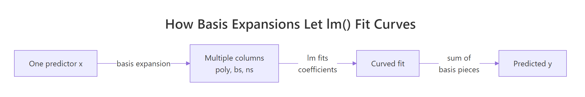
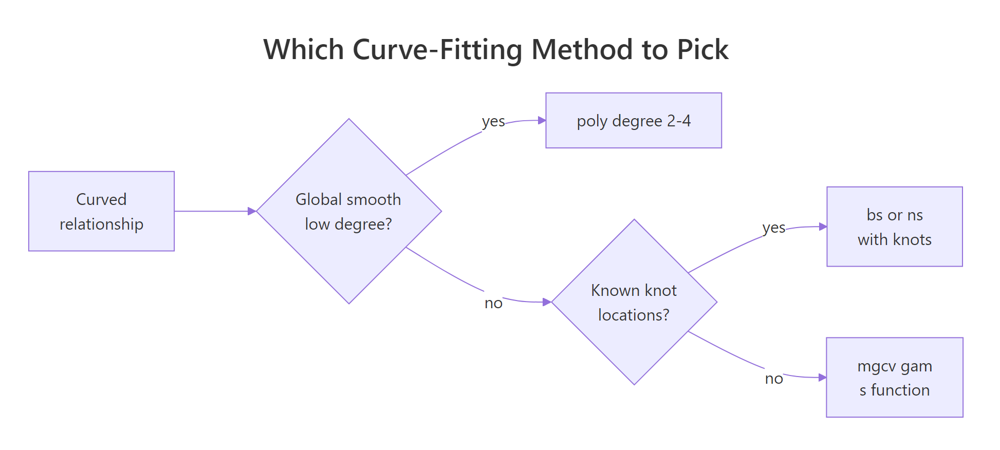

Polynomial and Spline Regression in R: Model Curvature Without Transforming Variables
Linear regression draws a straight line, but real-world relationships usually curve. Polynomial and spline regression let you model that curvature inside the familiar lm() workflow, without log-transforming your variables. This tutorial walks through poly(), bs(), ns(), and mgcv::gam() using built-in R datasets.
Why does linear regression fail on curved relationships?
Plot mpg against hp in mtcars and you see a clear bend: low-hp cars lose mileage fast, high-hp cars level off. A straight line misses that shape. Before introducing new tools, let's measure how badly linear regression does, then see how adding one squared term already helps.
Adding one squared term lifts R-squared from 0.60 to 0.76, a 16-point gain on the same predictor. That gap is the signal that hp relates to mpg through a curve, not a line. The rest of this tutorial is about fitting that curve well, without hand-crafting I(hp^2) terms.
Next, look at the residuals. A well-specified model leaves residuals scattered randomly around zero. A curved-truth-but-straight-fit leaves a clear pattern.
The red smoother on that plot curves in a pronounced U. That U is the curvature the straight line couldn't capture. It pushes residuals up at the extremes and down in the middle. A model that fits the true shape would flatten that smoother.
Try it: Fit a cubic polynomial of hp and check whether R-squared keeps improving over the quadratic.
Click to reveal solution
Explanation: The cubic adds only a small improvement over the quadratic (0.76 to 0.77). Most of the curvature was already captured by the squared term, which is a useful diagnostic: when the next degree barely helps, you've likely found the right complexity.
How do you add polynomial terms with poly()?
The manual way to fit a cubic is lm(y ~ x + I(x^2) + I(x^3)). That works, but poly() is cleaner and numerically safer. It builds the powered columns for you and by default returns them in an orthogonal basis (covered in the next section).
predict() with se.fit = TRUE returns fitted values and their standard errors, which lets you draw a confidence ribbon. The prediction grid covers hp from the minimum to the maximum observed value, so we don't extrapolate outside the data when plotting.
The cubic bends smoothly through the cloud and tracks the dip-then-plateau shape. At the low-hp end the confidence band is narrow (more data), at the high end it widens because we have few observations there. That widening is honest uncertainty, not model weakness.
I(x) + I(x^2) + I(x^3) by hand is fine for degree 2 or 3, but poly(x, k) scales to any degree, handles the math automatically, and saves you from silent collinearity bugs.Try it: Fit a quartic (degree-4) polynomial and check the R-squared. Does it beat the cubic?
Click to reveal solution
Explanation: R-squared climbs only 1 point from cubic to quartic. In-sample R-squared always rises as you add terms, so small gains like this signal you're starting to fit noise. Adjusted R-squared or AIC (covered later) penalises that.
What's the difference between raw and orthogonal polynomials?
poly(x, 3) returns orthogonal polynomials by default. poly(x, 3, raw = TRUE) returns raw powers (x, x^2, x^3). The fitted curves and predictions are identical. The coefficients are not, and that difference matters for interpretation and numerical stability.
The raw coefficients are tiny for hp^2 and hp^3 because hp ranges roughly 50 to 335, so hp^3 reaches 38 million. That scale gap makes raw coefficients hard to compare and inflates standard errors. Orthogonal coefficients are on comparable scales, which stabilises both the numerical fit and the p-values in summary().
So orthogonal and raw give exactly the same fit, down to rounding error. The choice is purely about how you read the coefficients. If you care about interpreting individual terms or reporting "the quadratic component is significant", use orthogonal. If you need the equation y = a + b*x + c*x^2 + d*x^3 to plug into another system, use raw = TRUE.
cor(hp, hp^2) on mtcars is about 0.98. High collinearity inflates coefficient standard errors and can mask truly significant terms. Orthogonal polynomials are constructed so each column is uncorrelated with the others, which fixes the problem.Try it: Fit a degree-3 polynomial both ways and compare the t-statistic for the cubic term.
Click to reveal solution
Explanation: Surprise: the t-values match exactly. That's because orthogonalisation is a linear reparameterisation, so individual t-statistics and overall F-tests are preserved. The difference shows up in the coefficient scale and in correlation-heavy diagnostics like VIF, where raw polynomials look far worse.
How do B-splines work with bs()?
Polynomials fit a single curve across the whole predictor range. That's restrictive: a 4th-degree polynomial can wiggle at one end in ways that distort the other end. Splines fix this by cutting the predictor into segments at knots and fitting a smooth piecewise polynomial (usually cubic) joined at those knots. splines::bs() builds the B-spline basis.

Figure 1: Basis expansion turns one predictor into many columns so lm() can fit curves.
df = 5 tells bs() to build 5 basis columns. By default it uses cubic pieces with 2 interior knots placed at the 33rd and 67th percentiles of hp. You can override knot placement with the knots = argument, but the quantile default usually works well.
The spline bends more flexibly than the cubic polynomial, especially in the 100-200 hp range where most of the data sits. Outside that range the curve continues as a cubic extrapolation, which is why the confidence band flares at the right edge. Natural splines (next section) fix that flare.
df (higher = more wiggle) or by placing knots manually at scientifically meaningful cutpoints.Try it: Fit a more flexible spline with df = 7 and compare the fit.
Click to reveal solution
Explanation: R-squared rises slightly as df grows, but the curve starts wiggling to chase individual points. With only 32 observations in mtcars, df = 7 is already risky. Cross-validation (capstone 2) helps pick df honestly instead of chasing in-sample fit.
When should you use natural splines (ns())?
A B-spline extrapolates as a cubic beyond the outermost knots, which often swings wildly at the edges. A natural spline constrains the function to be linear outside the boundary knots. That's usually more believable and gives tighter confidence bands near the edges. Use splines::ns() when predictions at or beyond the data range matter.
Same idea as bs(), but with one extra constraint: the curve must be linear beyond the boundary knots. That "costs" some flexibility, so for the same df natural splines usually explain slightly less in-sample variance. The pay-off shows when we predict outside the training range.
At hp = 400 (well beyond max(hp) = 335 in mtcars), the B-spline predicts negative miles per gallon: a physically impossible answer driven by the cubic tail. The natural spline predicts 8.9 mpg, which is at least plausible. Neither is a real prediction at that point, but the natural spline fails gracefully while the B-spline produces nonsense.
bs() when you only care about the interior fit and want maximum flexibility there.Try it: Predict mpg at hp = 350 from both models and see how far apart they are.
Click to reveal solution
Explanation: Same data, same df, just a different boundary rule, and the predictions differ by 18 mpg. That gap is pure extrapolation risk. If your use case involves predicting at edge values, ns() is almost always the safer default.
How do GAMs automate smoothing with mgcv?
Polynomials and splines both require you to pick a degree or df. Generalised Additive Models (GAMs) in the mgcv package flip the question: you say "fit a smooth function of hp" and the algorithm chooses the smoothness automatically by penalising wiggliness via generalised cross-validation (GCV). This removes the guess-the-df step.
edf stands for effective degrees of freedom: 2.6 here means the fitted smooth has roughly the flexibility of a quadratic-to-cubic function. You didn't pick that number, mgcv did by minimising a penalised likelihood. That's the key ergonomics win: fewer knobs to tune.
The plot is centred (hence "partial residual", zero on the y-axis) and shows a smooth curve with a shaded 95% band. The curvature mirrors what the cubic polynomial found, but the edf was learned from data instead of fixed by you. Add rug = TRUE to see where observations are dense or sparse.
s(x) and mgcv uses a penalised likelihood to balance fit versus wiggliness. With two predictors you just write s(x1) + s(x2) and each gets its own learned smoothness. That scales far better than hand-picking df per term.Try it: Fit a GAM with two smooth terms, s(hp) + s(wt), and look at the edf for each.
Click to reveal solution
Explanation: Once wt is in the model, the smooth for hp collapses to edf 1 (a straight line) because wt absorbs most of the non-linearity. This kind of reshuffling is normal with correlated predictors, and GAMs handle it automatically by shrinking each smoother to the complexity the data actually supports.
How do you compare polynomial, spline, and GAM fits?
You now have five models fitted on mpg ~ hp. Which one to pick? Look at AIC (lower is better, penalises complexity) and effective degrees of freedom (lower is simpler). R-squared alone will always favour the most complex model, so don't use it to choose.
The GAM wins by AIC while using the fewest effective degrees of freedom after the linear baseline: that's the penalised likelihood doing its job. The cubic is right behind it with one more edf. The bs(df=5) fit is in last place because extra flexibility didn't help on this small dataset. AIC rewards models that explain variance without adding parameters they can't justify.
The four curves nearly overlap in the data-dense region and disagree most where data is thin. That disagreement is where model choice actually matters. In the body of the data, pick the simplest thing that works (cubic or GAM); at the edges, pick the model whose extrapolation behaviour you can defend (ns or GAM).

Figure 2: How to pick between polynomial, B-spline, natural spline, and GAM.
Try it: Add the quartic polynomial to the comparison table and check whether its AIC beats the cubic.
Click to reveal solution
Explanation: The quartic has a lower in-sample residual sum of squares than the cubic but a higher AIC because of its extra parameter. AIC's lesson: a tiny bump in R-squared is not worth an extra coefficient unless it pays for itself twice over.
Practice Exercises
Exercise 1: Compare poly, ns, and gam on airquality
Using airquality, fit three models of Ozone ~ Temp: poly(Temp, 3), ns(Temp, df = 4), and gam(s(Temp)). Drop rows where Ozone is NA. Report AIC for each and identify the winner.
Click to reveal solution
Explanation: The GAM wins by ~3 AIC points, which is a meaningful edge (rule of thumb: a difference of 2+ AIC points is evidence). The three curves are visually very similar, but gam() shrinks toward the simplest smooth the data supports, and that parsimony shows up in AIC.
Exercise 2: Cross-validate the degrees of freedom for bs()
Leave-one-out cross-validation is the honest way to pick df for a spline. Write a loop that, for each df in 2:8, computes the LOOCV RMSE for mpg ~ bs(hp, df) on mtcars, then pick the winning df.
Click to reveal solution
Explanation: RMSE bottoms out at df = 3 and climbs from there. That's a classic overfitting curve: the model memorises individual points as df grows, so out-of-sample error rises. The CV winner (df = 3) is simpler than the default df = 5, which is exactly the kind of correction CV is meant to catch.
Complete Example
End-to-end workflow: use airquality to model Ozone as a function of Temp, Wind, and Solar.R. We'll fit a single GAM with all three smooths, check the effective degrees of freedom, diagnose, and predict.
Each term gets its own effective degrees of freedom: Temp is clearly the most non-linear (edf 3.8), Solar.R is closer to a quadratic (edf 2.1), and all three are significant at 5%. This one model replaces three separate polynomial fits and handled the smoothness selection for you.
The smooth plots confirm Temp drives most of the curvature (sharp rise after 80F), Wind is mildly non-linear (flattens above 12 mph), and Solar.R has a gentle plateau. The predicted Ozone at typical mid-summer conditions (85F, 10 mph wind, 200 langleys) is 56.6 with SE 4.2, so a 95% interval of roughly 48 to 65.
Summary
| Method | R call | When to use | Pick df by |
|---|---|---|---|
| Polynomial | lm(y ~ poly(x, k)) |
Simple global curve, small k (2-3) |
AIC over a few values |
| Raw polynomial | lm(y ~ poly(x, k, raw=TRUE)) |
You need the explicit equation | Same as above |
| B-spline | lm(y ~ bs(x, df=k)) |
Flexible interior fit, ignore edges | CV or AIC |
| Natural spline | lm(y ~ ns(x, df=k)) |
Predictions near/beyond data range | CV or AIC |
| GAM | gam(y ~ s(x), data=...) |
Multiple predictors, automatic smoothness | Automatic (GCV/REML) |
Defaults that usually work: poly(x, 3) for a quick first cut, ns(x, df = 4) for safe extrapolation, gam(y ~ s(x1) + s(x2)) for anything with more than one predictor. Always check residuals, AIC, and (when you can afford it) cross-validation before trusting any curve.
References
- Wood, S.N. Generalized Additive Models: An Introduction with R, 2nd Edition. CRC Press (2017). The definitive reference for
mgcv. Link - James, G., Witten, D., Hastie, T., Tibshirani, R. An Introduction to Statistical Learning, Chapter 7: Moving Beyond Linearity. Springer (2021). Link
- R Core Team.
splinespackage reference:bs(),ns(). Link - Wood, S.N.
mgcvCRAN reference manual. Link - Hastie, T., Tibshirani, R. Generalized Additive Models. Statistical Science 1(3), 297-318 (1986). The original GAM paper. Link
- de Boor, C. A Practical Guide to Splines. Springer (1978). The foundational text on B-splines.
- Perperoglou, A., Sauerbrei, W., Abrahamowicz, M., Schmid, M. A review of spline function procedures in R. BMC Medical Research Methodology 19, 46 (2019). Link
Continue Learning
- Linear Regression in R: the baseline model every curve fit is measured against. Start here if you're rusty on
lm()basics. - Regression Diagnostics in R: the residual plots and influence measures that tell you whether a polynomial or spline is the right fix.
- Ridge & Lasso Regression in R: the penalised-likelihood family that
mgcv::gam()belongs to, applied to linear models with many predictors.